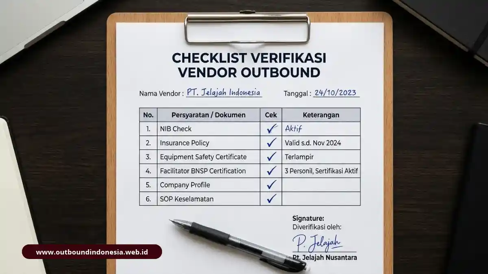

Memilih vendor outbound dan team building yang tepat berarti menilai tujuh hal fundamental: pemahaman tujuan perusahaan, kualitas desain program, rekam jejak korporat, kompetensi fasilitator bersertifikat, sistem keselamatan, fleksibilitas kustomisasi, dan kejelasan deliverables proposal. Harga hanyalah satu pertimbangan komersial, bukan penentu kelayakan utama.
Panduan Terkait: Sebelum menyeleksi mitra pelaksana, pastikan tim Anda memahami konsep dasar di artikel pilar kami: Perbedaan Outbound dan Team Building: Ulasan Lengkap dan Contoh Kasus.
Mengapa Memilih Vendor Hanya dari Harga dan Tampilan Proposal Berisiko?
Memilih vendor berdasarkan harga termurah atau proposal yang sekadar menarik secara visual berisiko besar menghasilkan acara yang tampak meriah di permukaan tetapi hampa dampak kinerja, bahkan membahayakan keselamatan seluruh karyawan di lapangan.
Proposal cetak yang rapi, penuh grafis mewah, belum tentu mencerminkan kualitas eksekusi di medan sesungguhnya. Banyak vendor yang menekan harga serendah mungkin justru memangkas komponen krusial yang kasat mata: kualitas dan durasi sesi debriefing, kualifikasi fasilitator utama, rasio tim pemandu lapangan (guide & sweeper), hingga peralatan keselamatan berstandar UIAA/CE.
Peran vendor di era modern telah bergeser secara fundamental. Dahulu perusahaan mungkin cukup memakai jasa Event Organizer (EO) yang sebatas mengatur teknis transportasi, tenda, dan katering. Namun kini, korporasi memerlukan mitra strategis SDM yang paham dinamika organisasi, psikologi kelompok, serta mampu menyelaraskan simulasi lapangan dengan sasaran bisnis perusahaan.
Apa Saja Lima Kesalahan Umum dalam Pengadaan Vendor?
Berdasarkan audit pengadaan pelatihan SDM korporasi, lima kesalahan berikut paling sering terjadi dan seharusnya dapat diidentifikasi serta dicegah sejak tahap tender awal:
- Terlalu terpaku pada penawaran harga terendah: Mengorbankan aspek keselamatan, rasio instruktur pendamping, dan mutu makanan/asuransi demi efisiensi biaya semu di atas kertas.
- Tergiur katalog games yang bombastis: Terpikat oleh daftar permainan seru atau wahana ekstrem tanpa meninjau relevansinya dengan akar masalah komunikasi tim di kantor.
- Mengabaikan portofolio penanganan skala serupa: Mengabaikan rekam jejak nyata vendor dalam mengelola dinamika kelompok korporat berskala puluhan hingga ratusan peserta.
- Tidak memverifikasi sertifikasi kompetensi fasilitator: Membiarkan instruktur tanpa lisensi resmi memandu simulasi sensitif yang melibatkan gesekan interpersonal antarpeserta.
- Mengabaikan sistem manajemen risiko dan SOP darurat: Tidak memeriksa rencana evakuasi medis darurat (medevac), ketersediaan tim P3K bersertifikat, dan polis asuransi resmi.
Bagaimana Tujuh Kriteria Evaluasi Vendor Profesional Bekerja?
Tujuh kriteria evaluasi berikut dirancang agar tim HRD dan divisi Procurement memiliki instrumen asesmen yang objektif, terukur, dan dapat dipertanggungjawabkan kepada jajaran manajemen puncak:
Kriteria 1: Apakah Vendor Menggali Tujuan Perusahaan Anda?
Vendor profesional selalu mengawali interaksi dengan pendekatan konsultatif (Training Needs Analysis/TNA). Mereka aktif mengajukan pertanyaan mendalam mengenai tantangan internal tim, profil demografis peserta, budaya kerja, hingga indikator keberhasilan yang diharapkan manajemen sebelum menyodorkan paket harga.
Kriteria 2: Bagaimana Kualitas Desain Program dan Metode Debriefing-nya?
Program yang bermutu harus berakar pada kerangka experiential learning David Kolb: pengalaman nyata (concrete experience), refleksi terfasilitasi (reflective observation), perumusan konsep (abstract conceptualization), dan rencana penerapan di meja kerja (active experimentation). Pastikan vendor mampu memaparkan alur debriefing funneling secara terstruktur.
Kriteria 3: Apa Rekam Jejak dan Portofolio Korporatnya?
Pengalaman menangani klien korporasi dari industri berskala sejenis membuktikan kematangan logistik, kemampuan mengendalikan krisis di lapangan, dan pemahaman etika kerja profesional. Minta dokumentasi video kegiatan autentik serta kontak referensi HRD sebelumnya.
Kriteria 4: Apakah Fasilitatornya Tersertifikasi dan Kompeten?
Fasilitator adalah jiwa dari program team building. Pastikan master game dan lead facilitator memiliki sertifikasi kompetensi resmi dari Badan Nasional Sertifikasi Profesi (BNSP) di bidang kepemanduan outbound, serta didukung latar belakang pendidikan psikologi atau manajemen SDM.
Kriteria 5: Bagaimana Standar Keselamatan dan Manajemen Risikonya?
Vendor wajib memiliki protokol keselamatan tertulis: sesi safety briefing wajib sebelum aktivitas, peralatan keselamatan bersertifikasi internasional (misalnya helm dan pelampung standar rafting), tim sweeper terlatih, serta akses rujukan cepat ke fasilitas kesehatan terdekat.
Kriteria 6: Seberapa Fleksibel Program Dapat Disesuaikan?
Penyedia outbound terbaik tidak memaksakan paket template yang kaku. Mereka memiliki fleksibilitas untuk memodifikasi intensitas fisik aktivitas, menyesuaikan skenario problem solving dengan nilai-nilai perusahaan (core values), serta menyesuaikan alokasi waktu kegiatan.
Kriteria 7: Seberapa Jelas Proposal dan Deliverables-nya?
Proposal profesional harus memuat pembagian peran staf, rundown per menit yang realistis, menu konsumsi higienis, fasilitas medis, serta format laporan evaluasi tertulis pasca-kegiatan yang akan diserahkan kepada HRD.
Bagaimana Matriks Bobot Penilaian Proposal Vendor yang Disarankan?
Untuk menghindari subjektivitas antaranggota tim penilai, gunakan matriks pembobotan evaluasi berikut. Perhatikan bahwa pemahaman terhadap tujuan menduduki persentase tertinggi (25%), sementara faktor harga hanya diberi bobot 5%.

Checklist verifikasi legalitas, keselamatan, dan kompetensi vendor sebelum penandatanganan SPK| Parameter Evaluasi | Bobot | Alasan dan Penjelasan Penilaian |
|---|---|---|
| Pemahaman Tujuan Perusahaan | 25% | Memastikan program yang dirancang relevan secara langsung dengan tantangan dan kebutuhan internal organisasi. |
| Kualitas Desain Program & Debriefing | 20% | Menjamin tersedianya alur experiential learning yang terstruktur sehingga peserta tidak sekadar bermain tanpa refleksi. |
| Kompetensi Fasilitator Lapangan | 15% | Menjamin kendali dinamika kelompok kondusif, aman secara psikologis, dan dipandu oleh trainer bersertifikat BNSP. |
| Sistem Keselamatan & Medis | 15% | Memitigasi risiko operasional, menyediakan peralatan bersertifikasi, SOP evakuasi darurat, dan perlindungan asuransi peserta. |
| Pengalaman & Rekam Jejak Korporat | 10% | Menunjukkan kesiapan logistik, penanganan dinamika skala besar, serta reputasi positif dari klien-klien korporat ternama. |
| Fleksibilitas Kustomisasi | 10% | Kemampuan vendor menyelaraskan simulasi dengan core values organisasi, kondisi fisik peserta, dan batasan jadwal. |
| Harga Investasi Paket | 5% | Mencegah godaan memilih harga murah yang mengorbankan kualitas konsumsi, keselamatan, dan efektivitas pelatihan SDM. |
| Total Bobot Penilaian | 100% | Dapat disesuaikan proporsinya mengikuti regulasi internal procurement instansi Anda. |
Apa Saja yang Harus Diperiksa dalam Checklist Akhir Sebelum SPK?
Sebelum Surat Perintah Kerja (SPK) atau Memorandum of Understanding (MoU) ditandatangani dan uang muka diserahkan, pastikan seluruh poin verifikasi berikut telah tercantum secara tertulis dan mengikat kedua belah pihak:
- Tujuan & KPI Program: Sasaran perilaku kerja dan indikator keberhasilan tertulis eksplisit dalam lampiran kontrak.
- Profil Lead Facilitator: Nama, riwayat jam terbang, dan salinan sertifikat BNSP instruktur terlampir resmi.
- Rasio Staf Lapangan: Jumlah pemandu lapangan, instruktur permainan, dan tim medis seimbang terhadap jumlah peserta (minimal 1 staf pendamping per 8-10 peserta).
- Prosedur Tanggap Darurat & Medis: Lokasi posko darurat, ambulans siaga (bila diperlukan), dan polis asuransi jiwa peserta terkonfirmasi aktif.
- Inspeksi Lokasi & Alat: Surat pernyataan kelaikan peralatan outdoor (tali karabiner, helm, pelampung rafting, dan arena simulasi).
- Format Deliverables Pasca-Event: Vendor berkomitmen menyerahkan laporan evaluasi komprehensif, rekap dinamika tim, dan dokumentasi foto/video maksimal 7-14 hari kerja setelah acara.
- Klausul Perubahan Jadwal & Pembatalan: Ketentuan force majeure (faktor cuaca buruk, bencana) dan tahapan termin pembayaran diatur secara transparan.
Bagaimana Mengukur Dampak & ROI Setelah Program Berjalan?
Setelah vendor terpilih dan acara terlaksana, tugas HRD adalah mengukur perubahan perilaku kerja nyata melalui kerangka survei terukur hingga 3 bulan ke depan.
Pelajari Panduan ROI Team BuildingKesimpulan Praktis
Vendor outbound terbaik untuk perusahaan Anda adalah pihak yang paling mendalam memahami tujuan strategis organisasi dan paling siap mengelola risiko operasional di lapangan, bukan pihak yang sekadar menyodorkan lembar penawaran dengan harga terendah.
Gunakan tujuh kriteria evaluasi beserta matriks bobot penilaian di atas sebagai acuan kolaborasi antara HRD dan divisi pengadaan (procurement). Verifikasi seluruh legalitas, kualifikasi fasilitator, dan skema keselamatan secara tertulis melalui checklist sebelum menandatangani SPK.
Siapkan ringkasan kebutuhan organisasi Anda, diskusikan bersama tim penilai, lalu undang penyedia program profesional untuk mempresentasikan proposal kustom yang benar-benar menjawab sasaran tim Anda.